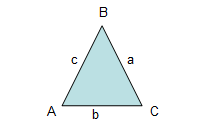
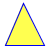
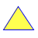
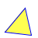
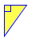
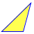
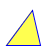

| Vertex | The vertex (plural: vertices) is a corner of the triangle. Every triangle has three vertices. |
| Base | The base of a triangle can be any one of the three sides, usually the one drawn at the bottom. You can pick any side you like to be the base. Commonly used as a reference side for calculating the area of the triangle. In an isosceles triangle, the base is usually taken to be the unequal side. |
| Altitude | The altitude of a triangle is the perpendicular from the base to the opposite vertex. (The base may need to be extended).
Since there are three possible bases, there are also three possible altitudes. The three altitudes intersect at a
single point, called the orthocenter of the triangle.
See Orthocenter of a Triangle. In the figure above, you can see one possible base and its corresponding altitude displayed. |
| Median | The median of a triangle is a line from a vertex to the midpoint of the opposite side. The three medians intersect at a single point, called the centroid of the triangle. See Centroid of a Triangle |
| Area | See area of the triangle and Heron's formula |
| Perimeter | The distance around the triangle. The sum of its sides. See Perimeter of a Triangle |
| Interior angles | The three angles on the inside of the triangle at each vertex. See Interior angles of a triangle |
| Exterior angles | The angle between a side of a triangle and the extension of an adjacent side. See Exterior angles of a triangle |

It is usual to name each vertex of a triangle with a single capital (upper-case) letter. The sides can be named with a single small (lower case) letter, and named after the opposite angle. So in the figure above, you can see that side b is opposite vertex B, side c is opposite vertex C and so on.Alternatively, the side of a triangle can be thought of as a line segment joining two vertices. So then side b would be called AC. This is the form used on this site because it is consistent across all shapes, not just triangles.
| Isosceles  |
Two sides equal See Isosceles triangle definition |
| Equilateral  |
All sides equal See Equilateral triangle definition |
| Scalene  |
No sides equal See Scalene triangle definition |
| Right Triangle  |
One angle 90°. See Right triangle definition |
| Obtuse  |
One angle greater than 90° See Obtuse triangle definition |
| Acute  |
All angles less than 90° See Acute triangle definition |
| Equiangular |
All interior angles equal See Equiangular triangle definition |